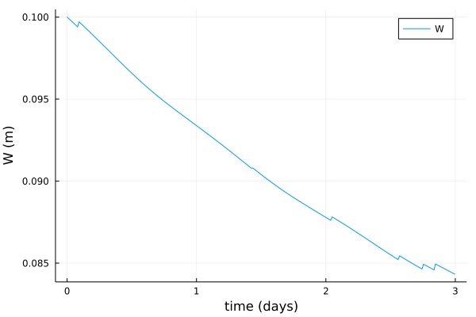
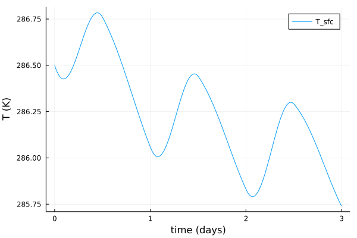
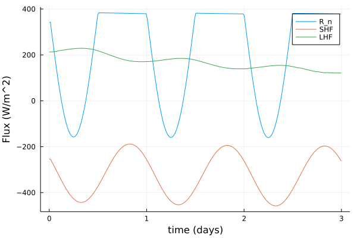

Introduction to the Land Bucket Model
The land bucket model implemented in ClimaLSM is based off of the models of Manabe (1969)[1], Milly and Shmakin (2002)[2], and the SLIM model (Laguë, Bonan, Swann 2019)[3], with small changes, as noted.
This tutorial explains in brief the core equations and the necessary parameters of the bucket model, and shows how to set up a simulation in standalone mode. More detail for coupled runs can be found in the ClimaCoupler.jl documentation. and in the coupled simulation tutorial.
At each coordinate point on the surface, we solve ordinary differential equations for the subsurface water content of land (W, m), the surface temperature of the land (T_sfc, K), and the surface water content of land (Ws, m). This tutorial will be modified in the future to explain simulations involving snow water equivalent, though we have set some of the groundwork for that in the code already (e.g. with albedo).
We have:
$\frac{d W}{dt} = I(W, P_{liq}, E),$
$\frac{d Ws}{dt} = P_{liq} - E - I(W, P_{liq}, E),$
$\frac{ρc dT_{sfc}}{dt} = - \frac{1}{d} (F_{sfc} - F_{bot}),$
$F_{sfc} = R_n+ SHF + LHF$
$R_n = -(1-α)*SW↓ -LW↓ + σT_{sfc}^4$
$F_{bot} = -κ \frac{T_{sfc} - T_{base}}{d}$
where I is the infiltration as defined in [1], P_liq (m/s) is the water volume flux of precipitation, E (m/s) is the water volume flux in evaporation, ρc is the volumetric heat capacity of the land, R_n is the net radiation, SHF the sensible heat flux, LHF the latent heat flux, α(lat, lon) is the surface albedo, σ the Stefan-Boltzmann constant, κ is the thermal conductivity, T_base the base temperature at depth d, and d is the soil depth. The albedo is a linear interpolation between the albedo of soil and snow, as decribed in [3].
Turbulent surface fluxes of sensible heat, latent heat, and water vapor (SHF, LHF, E) are computed using Monin-Obukhov theory; SW↓ and LW↓ are the downward fluxes in short and long wavelength bands.
Note that with the exception of precipitation and downwelling radiation, all fluxes are defined such that positive is towards the atmosphere. The bottom flux can be set to zero by setting κ = 0.
When computing the evaporation, we use
$q_{sfc} = β(W, Wf) q_{sat}(T_{sfc}, ρ_{sfc}),$
where β is the factor used in [1] which accounts for the land water content when it is below the saturated value. This makes use of the field capacity parameter W_f. This is different from other bucket models in that we modify q_sfc directly to account for the bucket being below saturation, rather than modify the potential evaporation rate itself via a resistance term.
Simulating a standalone bucket model
First, we need to import necessary packages. We use OrdinaryDiffEq.jl for the timestepping, and DiffEqCallbacks.jl is used as described below, for accessing the solver state during the integration.
using OrdinaryDiffEq: ODEProblem, solve, Euler
using DiffEqCallbacksWe use ClimaCore for setting up the domain/coordinate points. While this infrastructure isn't really necessary for standalone simulations, adhering to it makes setting up coupled simulations very easy. It also is nice to rely on ClimaCore utilities because they have been designed in advance for running distributed simulations.
using ClimaCoreWe also use CLIMAParameters, which strives to ensure a common set of parameters across all Clima models, and to make parameter estimation more seamless.
import CLIMAParameters as CPLastly, let's bring in the bucket model types (from ClimaLSM) that we will need access to.
using ClimaLSM.Bucket:
BucketModel,
BucketModelParameters,
PrescribedAtmosphere,
PrescribedRadiativeFluxes,
BulkAlbedo
using ClimaLSM.Domains: coordinates, Point
using ClimaLSM: initialize, make_update_aux, make_ode_functionWe also want to plot the solution
using Plots
FT = Float64;As mentioned we use CLIMAParameters for earth parameters that are required across models (e.g. the density of water and ice, the latent heat of fusion at a reference temperature, etc). The land model requires additional parameters as described in the text above. These two sets are combined in the object BucketModelParameters as follows:
import ClimaLSM
include(joinpath(pkgdir(ClimaLSM), "parameters", "create_parameters.jl"));
earth_param_set = create_lsm_parameters(FT);Define our BulkAlbedo model using a constant soil and snow albedo: The soil albedo is a function of coordinates, which would be (x,y) on a plane, and (lat,lon) on a sphere. In the future, we will support other albedo models.
α_soil = (coordinate_point) -> FT(0.2);
α_snow = FT(0.8);
albedo = BulkAlbedo{FT}(α_snow, α_soil);The critical snow level setting the scale for when we interpolate between snow and soil albedo
S_c = FT(0.2);The field capacity of the soil
W_f = FT(0.15);The soil depth and base temperature
d_soil = FT(10.0);
T_base = FT(280.0);Roughness lengths (meters)
z_0m = FT(1e-2);
z_0b = FT(1e-3);Thermal parameters of soil
κ_soil = FT(0.0);
ρc_soil = FT(2e6);
bucket_parameters = BucketModelParameters(
d_soil,
T_base,
κ_soil,
ρc_soil,
albedo,
S_c,
W_f,
z_0m,
z_0b,
earth_param_set,
);Set up the model domain. At every coordinate point, we'll solve an ODE for W, Ws, and T_sfc. In coupled simulations run at the same resolution as the atmosphere, the bucket domain would match the bottom domain of the atmosphere model. In general, however, the two resolutions do not need to match. Here we just set up something simple - a point, appropriate for single column models.
bucket_domain = Point(; z_sfc = FT(0.0));To drive the system in standalone mode, the user must provide prescribed functions of time for the water volume flux in precipitation for the net downward shortwave and longwave radiative energy fluxes (SW↓, LW↓, W/m^2), for the atmospheric temperature T_a, wind speed u_a (m/s), specific humidity q_a, and air density ρ_a (kg/m^3) at a reference height h_a (m), as well as for the air density ρ_sfc (kg/m^3) at the surface of the earth.
Here we define the model drivers, starting with downward radiation.
SW_d =
(t) -> eltype(t)(
sin(2.0 * π * t / 86400) > 0 ? 300.0 * sin(2.0 * π * t / 86400) : 0.0,
);
LW_d =
(t) -> eltype(t)(
sin(2.0 * π * t / 86400) > 0 ? 300.0 * sin(2.0 * π * t / 86400) : 0.0,
);
bucket_rad = PrescribedRadiativeFluxes(FT, SW_d, LW_d);Prescribed atmospheric variables
Stochastic prescipitation:
precip = (t) -> eltype(t)(5e-7 * rand() * (rand() > 0.97));Diurnal temperature variations:
T_atmos = (t) -> eltype(t)(300.0 + 5.0 * sin(2.0 * π * t / 86400 + 7200));Constant otherwise:
u_atmos = (t) -> eltype(t)(3.0);
q_atmos = (t) -> eltype(t)(0.005);
h_atmos = FT(10);
ρ_atmos = (t) -> eltype(t)(1.13);
ρ_sfc = FT(1.15);
bucket_atmos = PrescribedAtmosphere(
precip,
T_atmos,
u_atmos,
q_atmos,
ρ_atmos,
h_atmos,
ρ_sfc,
);Then, we create the model object, which contains the drivers, parameters, domain, and is associated with the correct differential equations for the bucket model:
model = BucketModel(
parameters = bucket_parameters,
domain = bucket_domain,
atmosphere = bucket_atmos,
radiation = bucket_rad,
);Note the holder structs for the radiation and atmosphere functions: they are named Prescribed. In coupled simulations, we would use a different type and rely on multiple dispatch to obtain the atmospheric and radiative quantitites from the coupler.
Like all ClimaLSM models, we set up the state vector using initialize:
Y, p, coords = initialize(model);We can inspect the prognostic and auxiliary variables of the model:
ClimaLSM.prognostic_vars(model)
Y.bucket |> propertynames(:W, :T_sfc, :Ws, :S)The auxiliary variables in this case are the turbulent fluxes, the net radiation, and the surface specific humidity.
ClimaLSM.auxiliary_vars(model)
p.bucket |> propertynames(:q_sfc, :E, :LHF, :SHF, :R_n)Next is to set initial conditions.
Y.bucket.T_sfc .= FT(286.5);
Y.bucket.W .= FT(0.1);
Y.bucket.Ws .= FT(0.0);
Y.bucket.S .= FT(0.0);Then to create the entire right hand side function for the system of ordinary differential equations:
ode_function! = make_ode_function(model);Then set up the simulation
t0 = FT(0.0);
tf = FT(3 * 86400);
prob = ODEProblem(ode_function!, Y, (t0, tf), p);
Δt = FT(1000.0);We need a callback to get and store the auxiliary fields, as they are not stored by default.
saved_values = SavedValues(FT, ClimaCore.Fields.FieldVector);
cb = SavingCallback(
(u, t, integrator) -> copy(integrator.p),
saved_values;
saveat = 0:Δt:tf,
);
sol = solve(prob, Euler(); dt = Δt, saveat = 0:Δt:tf, callback = cb);Extracting the solution from what is returned by the ODE.jl commands is a bit clunky right now, but we are working on hiding some of this. parent extracts the underlying data from the fields stored in the ClimaCore.Fields.FieldVector, and we loop over the solution sol because of how the data is stored within solutions returned by ODE.jl - indexed by timestep.
W = [parent(sol.u[k].bucket.W)[1] for k in 1:length(sol.t)]
Ws = [parent(sol.u[k].bucket.Ws)[1] for k in 1:length(sol.t)]
T_sfc = [parent(sol.u[k].bucket.T_sfc)[1] for k in 1:length(sol.t)]
q_sfc =
[parent(saved_values.saveval[k].bucket.q_sfc)[1] for k in 1:length(sol.t)]
R_n = [parent(saved_values.saveval[k].bucket.R_n)[1] for k in 1:length(sol.t)]
SHF = [parent(saved_values.saveval[k].bucket.SHF)[1] for k in 1:length(sol.t)]
LHF = [parent(saved_values.saveval[k].bucket.LHF)[1] for k in 1:length(sol.t)]
E = [parent(saved_values.saveval[k].bucket.E)[1] for k in 1:length(sol.t)]
plot(sol.t ./ 86400, W, label = "W", xlabel = "time (days)", ylabel = "W (m)")
savefig("w.png")
plot(
sol.t ./ 86400,
T_sfc,
label = "T_sfc",
xlabel = "time (days)",
ylabel = "T (K)",
)
savefig("t.png")
plot(
sol.t ./ 86400,
R_n,
label = "R_n",
xlabel = "time (days)",
ylabel = "Flux (W/m^2)",
)
plot!(sol.t ./ 86400, SHF, label = "SHF")
plot!(sol.t ./ 86400, LHF, label = "LHF")
savefig("f.png")
References
[1] Manabe, S. (1969) CLIMATE AND THE OCEAN CIRCULATION I: The Atmospheric Circulation and the Hydrology of the Earth's Surface. Monthly Weather Review, Volume 97: Issue 11, p 739-774. [2] Milly, P. C. D. and Shmakin, A.B. (2002) Global Modeling of Land Water and Energy Balances. Part I: The Land Dynamics (LaD) Model Journal of Hydrometeorology, Volume 3: Issue 3, p 283-299. [3] Laguë, M., Bonan, G., and Swann, A. (2019) Seperating the Impact of Individual Land Surface Properties on the Terrestrial Surface Energy Budget in both the Coupled and Uncoupled Land-Atmosphere System Volume 32: Issue 18, p 5725-5744
This page was generated using Literate.jl.